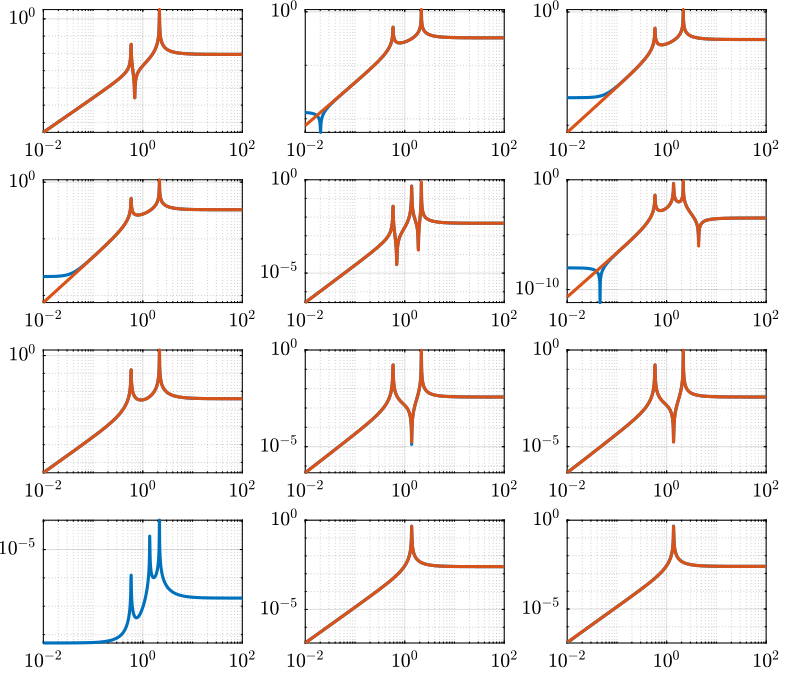

SVD Control
Table of Contents
- 1. Gravimeter - Simscape Model
- 2. Gravimeter - Functions
- 3. Stewart Platform - Simscape Model
- 3.1. Jacobian
- 3.2. Simscape Model
- 3.3. Identification of the plant
- 3.4. Obtained Dynamics
- 3.5. Real Approximation of \(G\) at the decoupling frequency
- 3.6. Verification of the decoupling using the “Gershgorin Radii”
- 3.7. Decoupled Plant
- 3.8. Diagonal Controller
- 3.9. Centralized Control
- 3.10. SVD Control
- 3.11. Results
1 Gravimeter - Simscape Model
1.1 Simscape Model - Parameters
open('gravimeter.slx')
Parameters
l = 0.5; % Length of the mass [m] la = 0.5; % Position of Act. [m] h = 1.7; % Height of the mass [m] ha = 1.7; % Position of Act. [m] m = 400; % Mass [kg] I = 115; % Inertia [kg m^2] k = 15e3; % Actuator Stiffness [N/m] c = 0.03; % Actuator Damping [N/(m/s)] deq = 0.2; % Length of the actuators [m] g = 0; % Gravity [m/s2]
1.2 System Identification - Without Gravity
%% Name of the Simulink File
mdl = 'gravimeter';
%% Input/Output definition
clear io; io_i = 1;
io(io_i) = linio([mdl, '/F1'], 1, 'openinput'); io_i = io_i + 1;
io(io_i) = linio([mdl, '/F2'], 1, 'openinput'); io_i = io_i + 1;
io(io_i) = linio([mdl, '/F3'], 1, 'openinput'); io_i = io_i + 1;
io(io_i) = linio([mdl, '/Acc_side'], 1, 'openoutput'); io_i = io_i + 1;
io(io_i) = linio([mdl, '/Acc_side'], 2, 'openoutput'); io_i = io_i + 1;
io(io_i) = linio([mdl, '/Acc_top'], 1, 'openoutput'); io_i = io_i + 1;
io(io_i) = linio([mdl, '/Acc_top'], 2, 'openoutput'); io_i = io_i + 1;
G = linearize(mdl, io);
G.InputName = {'F1', 'F2', 'F3'};
G.OutputName = {'Ax1', 'Az1', 'Ax2', 'Az2'};
pole(G)
ans =
-0.000473481142385801 + 21.7596190728632i
-0.000473481142385801 - 21.7596190728632i
-7.49842879459177e-05 + 8.6593576906982i
-7.49842879459177e-05 - 8.6593576906982i
-5.15386867925747e-06 + 2.27025295182755i
-5.15386867925747e-06 - 2.27025295182755i
The plant as 6 states as expected (2 translations + 1 rotation)
size(G)
State-space model with 4 outputs, 3 inputs, and 6 states.

Figure 1: Open Loop Transfer Function from 3 Actuators to 4 Accelerometers
1.3 System Identification - With Gravity
g = 9.80665; % Gravity [m/s2]
Gg = linearize(mdl, io);
Gg.InputName = {'F1', 'F2', 'F3'};
Gg.OutputName = {'Ax1', 'Az1', 'Ax2', 'Az2'};
We can now see that the system is unstable due to gravity.
pole(G)
ans =
-10.9848275341276 + 0i
10.9838836405193 + 0i
-7.49855396089326e-05 + 8.65962885769976i
-7.49855396089326e-05 - 8.65962885769976i
-6.68819341967921e-06 + 0.83296042226902i
-6.68819341967921e-06 - 0.83296042226902i

Figure 2: Open Loop Transfer Function from 3 Actuators to 4 Accelerometers with an without gravity
1.4 Analytical Model
1.4.1 Parameters
Control parameters
g = 1e5; g_svd = 1e5;
System parameters
w0 = 2*pi*.5; % MinusK BM1 tablle l = 0.8; % [m] la = l; % [m] h = 1.7; % [m] ha = h; % [m] m = 70; % [kg] k = 3e3; % [N/m] I = 10; % [kg m^2]
Bode options.
P = bodeoptions; P.FreqUnits = 'Hz'; P.MagUnits = 'abs'; P.MagScale = 'log'; P.Grid = 'on'; P.PhaseWrapping = 'on'; P.Title.FontSize = 14; P.XLabel.FontSize = 14; P.YLabel.FontSize = 14; P.TickLabel.FontSize = 12; P.Xlim = [1e-1,1e2]; P.MagLowerLimMode = 'manual'; P.MagLowerLim= 1e-3; %P.PhaseVisible = 'off';
Frequency vector.
w = 2*pi*logspace(-1,2,1000); % [rad/s]
1.4.2 generation of the state space model
M = [m 0 0
0 m 0
0 0 I];
%Jacobian of the bottom sensor
Js1 = [1 0 h/2
0 1 -l/2];
%Jacobian of the top sensor
Js2 = [1 0 -h/2
0 1 0];
%Jacobian of the actuators
Ja = [1 0 ha/2 %Left horizontal actuator
%1 0 h/2 %Right horizontal actuator
0 1 -la/2 %Left vertical actuator
0 1 la/2]; %Right vertical actuator
Jta = Ja';
K = k*Jta*Ja;
C = 0.06*k*Jta*Ja;
E = [1 0 0
0 1 0
0 0 1]; %projecting ground motion in the directions of the legs
AA = [zeros(3) eye(3)
-M\K -M\C];
BB = [zeros(3,6)
M\Jta M\(k*Jta*E)];
% BB = [zeros(3,3)
% M\Jta ];
%
% CC = [Ja zeros(3)];
% DD = zeros(3,3);
CC = [[Js1;Js2] zeros(4,3);
zeros(2,6)
(Js1+Js2)./2 zeros(2,3)
(Js1-Js2)./2 zeros(2,3)
(Js1-Js2)./(2*h) zeros(2,3)];
DD = [zeros(4,6)
zeros(2,3) eye(2,3)
zeros(6,6)];
system_dec = ss(AA,BB,CC,DD);
- Input = three actuators and three ground motions
- Output = the bottom sensor; the top sensor; the ground motion; the half sum; the half difference; the rotation
size(system_dec)
State-space model with 12 outputs, 6 inputs, and 6 states.
1.4.3 Comparison with the Simscape Model

Figure 3: Comparison of the analytical and the Simscape models
1.4.4 Analysis
% figure % bode(system_dec,P); % return
%% svd decomposition
% system_dec_freq = freqresp(system_dec,w);
% S = zeros(3,length(w));
% for m = 1:length(w)
% S(:,m) = svd(system_dec_freq(1:4,1:3,m));
% end
% figure
% loglog(w./(2*pi), S);hold on;
% % loglog(w./(2*pi), abs(Val(1,:)),w./(2*pi), abs(Val(2,:)),w./(2*pi), abs(Val(3,:)));
% xlabel('Frequency [Hz]');ylabel('Singular Value [-]');
% legend('\sigma_1','\sigma_2','\sigma_3');%,'\sigma_4','\sigma_5','\sigma_6');
% ylim([1e-8 1e-2]);
%
% %condition number
% figure
% loglog(w./(2*pi), S(1,:)./S(3,:));hold on;
% % loglog(w./(2*pi), abs(Val(1,:)),w./(2*pi), abs(Val(2,:)),w./(2*pi), abs(Val(3,:)));
% xlabel('Frequency [Hz]');ylabel('Condition number [-]');
% % legend('\sigma_1','\sigma_2','\sigma_3');%,'\sigma_4','\sigma_5','\sigma_6');
%
% %performance indicator
% system_dec_svd = freqresp(system_dec(1:4,1:3),2*pi*10);
% [U,S,V] = svd(system_dec_svd);
% H_svd_OL = -eye(3,4);%-[zpk(-2*pi*10,-2*pi*40,40/10) 0 0 0; 0 10*zpk(-2*pi*40,-2*pi*200,40/200) 0 0; 0 0 zpk(-2*pi*2,-2*pi*10,10/2) 0];% - eye(3,4);%
% H_svd = pinv(V')*H_svd_OL*pinv(U);
% % system_dec_control_svd_ = feedback(system_dec,g*pinv(V')*H*pinv(U));
%
% OL_dec = g_svd*H_svd*system_dec(1:4,1:3);
% OL_freq = freqresp(OL_dec,w); % OL = G*H
% CL_system = feedback(eye(3),-g_svd*H_svd*system_dec(1:4,1:3));
% CL_freq = freqresp(CL_system,w); % CL = (1+G*H)^-1
% % CL_system_2 = feedback(system_dec,H);
% % CL_freq_2 = freqresp(CL_system_2,w); % CL = G/(1+G*H)
% for i = 1:size(w,2)
% OL(:,i) = svd(OL_freq(:,:,i));
% CL (:,i) = svd(CL_freq(:,:,i));
% %CL2 (:,i) = svd(CL_freq_2(:,:,i));
% end
%
% un = ones(1,length(w));
% figure
% loglog(w./(2*pi),OL(3,:)+1,'k',w./(2*pi),OL(3,:)-1,'b',w./(2*pi),1./CL(1,:),'r--',w./(2*pi),un,'k:');hold on;%
% % loglog(w./(2*pi), 1./(CL(2,:)),w./(2*pi), 1./(CL(3,:)));
% % semilogx(w./(2*pi), 1./(CL2(1,:)),w./(2*pi), 1./(CL2(2,:)),w./(2*pi), 1./(CL2(3,:)));
% xlabel('Frequency [Hz]');ylabel('Singular Value [-]');
% legend('GH \sigma_{inf} +1 ','GH \sigma_{inf} -1','S 1/\sigma_{sup}');%,'\lambda_1','\lambda_2','\lambda_3');
%
% figure
% loglog(w./(2*pi),OL(1,:)+1,'k',w./(2*pi),OL(1,:)-1,'b',w./(2*pi),1./CL(3,:),'r--',w./(2*pi),un,'k:');hold on;%
% % loglog(w./(2*pi), 1./(CL(2,:)),w./(2*pi), 1./(CL(3,:)));
% % semilogx(w./(2*pi), 1./(CL2(1,:)),w./(2*pi), 1./(CL2(2,:)),w./(2*pi), 1./(CL2(3,:)));
% xlabel('Frequency [Hz]');ylabel('Singular Value [-]');
% legend('GH \sigma_{sup} +1 ','GH \sigma_{sup} -1','S 1/\sigma_{inf}');%,'\lambda_1','\lambda_2','\lambda_3');
1.4.5 Control Section
system_dec_10Hz = freqresp(system_dec,2*pi*10);
system_dec_0Hz = freqresp(system_dec,0);
system_decReal_10Hz = pinv(align(system_dec_10Hz));
[Ureal,Sreal,Vreal] = svd(system_decReal_10Hz(1:4,1:3));
normalizationMatrixReal = abs(pinv(Ureal)*system_dec_0Hz(1:4,1:3)*pinv(Vreal'));
[U,S,V] = svd(system_dec_10Hz(1:4,1:3));
normalizationMatrix = abs(pinv(U)*system_dec_0Hz(1:4,1:3)*pinv(V'));
H_dec = ([zpk(-2*pi*5,-2*pi*30,30/5) 0 0 0
0 zpk(-2*pi*4,-2*pi*20,20/4) 0 0
0 0 0 zpk(-2*pi,-2*pi*10,10)]);
H_cen_OL = [zpk(-2*pi,-2*pi*10,10) 0 0; 0 zpk(-2*pi,-2*pi*10,10) 0;
0 0 zpk(-2*pi*5,-2*pi*30,30/5)];
H_cen = pinv(Jta)*H_cen_OL*pinv([Js1; Js2]);
% H_svd_OL = -[1/normalizationMatrix(1,1) 0 0 0
% 0 1/normalizationMatrix(2,2) 0 0
% 0 0 1/normalizationMatrix(3,3) 0];
% H_svd_OL_real = -[1/normalizationMatrixReal(1,1) 0 0 0
% 0 1/normalizationMatrixReal(2,2) 0 0
% 0 0 1/normalizationMatrixReal(3,3) 0];
H_svd_OL = -[1/normalizationMatrix(1,1)*zpk(-2*pi*10,-2*pi*60,60/10) 0 0 0
0 1/normalizationMatrix(2,2)*zpk(-2*pi*5,-2*pi*30,30/5) 0 0
0 0 1/normalizationMatrix(3,3)*zpk(-2*pi*2,-2*pi*10,10/2) 0];
H_svd_OL_real = -[1/normalizationMatrixReal(1,1)*zpk(-2*pi*10,-2*pi*60,60/10) 0 0 0
0 1/normalizationMatrixReal(2,2)*zpk(-2*pi*5,-2*pi*30,30/5) 0 0
0 0 1/normalizationMatrixReal(3,3)*zpk(-2*pi*2,-2*pi*10,10/2) 0];
% H_svd_OL_real = -[zpk(-2*pi*10,-2*pi*40,40/10) 0 0 0; 0 10*zpk(-2*pi*10,-2*pi*100,100/10) 0 0; 0 0 zpk(-2*pi*2,-2*pi*10,10/2) 0];%-eye(3,4);
% H_svd_OL = -[zpk(-2*pi*10,-2*pi*40,40/10) 0 0 0; 0 zpk(-2*pi*4,-2*pi*20,4/20) 0 0; 0 0 zpk(-2*pi*2,-2*pi*10,10/2) 0];% - eye(3,4);%
H_svd = pinv(V')*H_svd_OL*pinv(U);
H_svd_real = pinv(Vreal')*H_svd_OL_real*pinv(Ureal);
OL_dec = g*H_dec*system_dec(1:4,1:3);
OL_cen = g*H_cen_OL*pinv([Js1; Js2])*system_dec(1:4,1:3)*pinv(Jta);
OL_svd = 100*H_svd_OL*pinv(U)*system_dec(1:4,1:3)*pinv(V');
OL_svd_real = 100*H_svd_OL_real*pinv(Ureal)*system_dec(1:4,1:3)*pinv(Vreal');
% figure
% bode(OL_dec,w,P);title('OL Decentralized');
% figure
% bode(OL_cen,w,P);title('OL Centralized');
figure
bode(g*system_dec(1:4,1:3),w,P);
title('gain * Plant');
figure
bode(OL_svd,OL_svd_real,w,P);
title('OL SVD');
legend('SVD of Complex plant','SVD of real approximation of the complex plant')
figure bode(system_dec(1:4,1:3),pinv(U)*system_dec(1:4,1:3)*pinv(V'),P);
CL_dec = feedback(system_dec,g*H_dec,[1 2 3],[1 2 3 4]); CL_cen = feedback(system_dec,g*H_cen,[1 2 3],[1 2 3 4]); CL_svd = feedback(system_dec,100*H_svd,[1 2 3],[1 2 3 4]); CL_svd_real = feedback(system_dec,100*H_svd_real,[1 2 3],[1 2 3 4]);
pzmap_testCL(system_dec,H_dec,g,[1 2 3],[1 2 3 4])
title('Decentralized control');
pzmap_testCL(system_dec,H_cen,g,[1 2 3],[1 2 3 4])
title('Centralized control');
pzmap_testCL(system_dec,H_svd,100,[1 2 3],[1 2 3 4])
title('SVD control');
pzmap_testCL(system_dec,H_svd_real,100,[1 2 3],[1 2 3 4])
title('Real approximation SVD control');
P.Ylim = [1e-8 1e-3];
figure
bodemag(system_dec(1:4,1:3),CL_dec(1:4,1:3),CL_cen(1:4,1:3),CL_svd(1:4,1:3),CL_svd_real(1:4,1:3),P);
title('Motion/actuator')
legend('Control OFF','Decentralized control','Centralized control','SVD control','SVD control real appr.');
P.Ylim = [1e-5 1e1];
figure
bodemag(system_dec(1:4,4:6),CL_dec(1:4,4:6),CL_cen(1:4,4:6),CL_svd(1:4,4:6),CL_svd_real(1:4,4:6),P);
title('Transmissibility');
legend('Control OFF','Decentralized control','Centralized control','SVD control','SVD control real appr.');
figure
bodemag(system_dec([7 9],4:6),CL_dec([7 9],4:6),CL_cen([7 9],4:6),CL_svd([7 9],4:6),CL_svd_real([7 9],4:6),P);
title('Transmissibility from half sum and half difference in the X direction');
legend('Control OFF','Decentralized control','Centralized control','SVD control','SVD control real appr.');
figure
bodemag(system_dec([8 10],4:6),CL_dec([8 10],4:6),CL_cen([8 10],4:6),CL_svd([8 10],4:6),CL_svd_real([8 10],4:6),P);
title('Transmissibility from half sum and half difference in the Z direction');
legend('Control OFF','Decentralized control','Centralized control','SVD control','SVD control real appr.');
1.4.6 Greshgorin radius
system_dec_freq = freqresp(system_dec,w);
x1 = zeros(1,length(w));
z1 = zeros(1,length(w));
x2 = zeros(1,length(w));
S1 = zeros(1,length(w));
S2 = zeros(1,length(w));
S3 = zeros(1,length(w));
for t = 1:length(w)
x1(t) = (abs(system_dec_freq(1,2,t))+abs(system_dec_freq(1,3,t)))/abs(system_dec_freq(1,1,t));
z1(t) = (abs(system_dec_freq(2,1,t))+abs(system_dec_freq(2,3,t)))/abs(system_dec_freq(2,2,t));
x2(t) = (abs(system_dec_freq(3,1,t))+abs(system_dec_freq(3,2,t)))/abs(system_dec_freq(3,3,t));
system_svd = pinv(Ureal)*system_dec_freq(1:4,1:3,t)*pinv(Vreal');
S1(t) = (abs(system_svd(1,2))+abs(system_svd(1,3)))/abs(system_svd(1,1));
S2(t) = (abs(system_svd(2,1))+abs(system_svd(2,3)))/abs(system_svd(2,2));
S2(t) = (abs(system_svd(3,1))+abs(system_svd(3,2)))/abs(system_svd(3,3));
end
limit = 0.5*ones(1,length(w));
figure
loglog(w./(2*pi),x1,w./(2*pi),z1,w./(2*pi),x2,w./(2*pi),limit,'--');
legend('x_1','z_1','x_2','Limit');
xlabel('Frequency [Hz]');
ylabel('Greshgorin radius [-]');
figure
loglog(w./(2*pi),S1,w./(2*pi),S2,w./(2*pi),S3,w./(2*pi),limit,'--');
legend('S1','S2','S3','Limit');
xlabel('Frequency [Hz]');
ylabel('Greshgorin radius [-]');
% set(gcf,'color','w')
1.4.7 Injecting ground motion in the system to have the output
Fr = logspace(-2,3,1e3);
w=2*pi*Fr*1i;
%fit of the ground motion data in m/s^2/rtHz
Fr_ground_x = [0.07 0.1 0.15 0.3 0.7 0.8 0.9 1.2 5 10];
n_ground_x1 = [4e-7 4e-7 2e-6 1e-6 5e-7 5e-7 5e-7 1e-6 1e-5 3.5e-5];
Fr_ground_v = [0.07 0.08 0.1 0.11 0.12 0.15 0.25 0.6 0.8 1 1.2 1.6 2 6 10];
n_ground_v1 = [7e-7 7e-7 7e-7 1e-6 1.2e-6 1.5e-6 1e-6 9e-7 7e-7 7e-7 7e-7 1e-6 2e-6 1e-5 3e-5];
n_ground_x = interp1(Fr_ground_x,n_ground_x1,Fr,'linear');
n_ground_v = interp1(Fr_ground_v,n_ground_v1,Fr,'linear');
% figure
% loglog(Fr,abs(n_ground_v),Fr_ground_v,n_ground_v1,'*');
% xlabel('Frequency [Hz]');ylabel('ASD [m/s^2 /rtHz]');
% return
%converting into PSD
n_ground_x = (n_ground_x).^2;
n_ground_v = (n_ground_v).^2;
%Injecting ground motion in the system and getting the outputs
system_dec_f = (freqresp(system_dec,abs(w)));
PHI = zeros(size(Fr,2),12,12);
for p = 1:size(Fr,2)
Sw=zeros(6,6);
Iact = zeros(3,3);
Sw(4,4) = n_ground_x(p);
Sw(5,5) = n_ground_v(p);
Sw(6,6) = n_ground_v(p);
Sw(1:3,1:3) = Iact;
PHI(p,:,:) = (system_dec_f(:,:,p))*Sw(:,:)*(system_dec_f(:,:,p))';
end
x1 = PHI(:,1,1);
z1 = PHI(:,2,2);
x2 = PHI(:,3,3);
z2 = PHI(:,4,4);
wx = PHI(:,5,5);
wz = PHI(:,6,6);
x12 = PHI(:,1,3);
z12 = PHI(:,2,4);
PHIwx = PHI(:,1,5);
PHIwz = PHI(:,2,6);
xsum = PHI(:,7,7);
zsum = PHI(:,8,8);
xdelta = PHI(:,9,9);
zdelta = PHI(:,10,10);
rot = PHI(:,11,11);
2 Gravimeter - Functions
2.1 align
This Matlab function is accessible here.
function [A] = align(V)
%A!ALIGN(V) returns a constat matrix A which is the real alignment of the
%INVERSE of the complex input matrix V
%from Mohit slides
if (nargin ==0) || (nargin > 1)
disp('usage: mat_inv_real = align(mat)')
return
end
D = pinv(real(V'*V));
A = D*real(V'*diag(exp(1i * angle(diag(V*D*V.'))/2)));
end
2.2 pzmap_testCL
This Matlab function is accessible here.
function [] = pzmap_testCL(system,H,gain,feedin,feedout)
% evaluate and plot the pole-zero map for the closed loop system for
% different values of the gain
[~, n] = size(gain);
[m1, n1, ~] = size(H);
[~,n2] = size(feedin);
figure
for i = 1:n
% if n1 == n2
system_CL = feedback(system,gain(i)*H,feedin,feedout);
[P,Z] = pzmap(system_CL);
plot(real(P(:)),imag(P(:)),'x',real(Z(:)),imag(Z(:)),'o');hold on
xlabel('Real axis (s^{-1})');ylabel('Imaginary Axis (s^{-1})');
% clear P Z
% else
% system_CL = feedback(system,gain(i)*H(:,1+(i-1)*m1:m1+(i-1)*m1),feedin,feedout);
%
% [P,Z] = pzmap(system_CL);
% plot(real(P(:)),imag(P(:)),'x',real(Z(:)),imag(Z(:)),'o');hold on
% xlabel('Real axis (s^{-1})');ylabel('Imaginary Axis (s^{-1})');
% clear P Z
% end
end
str = {strcat('gain = ' , num2str(gain(1)))}; % at the end of first loop, z being loop output
str = [str , strcat('gain = ' , num2str(gain(1)))]; % after 2nd loop
for i = 2:n
str = [str , strcat('gain = ' , num2str(gain(i)))]; % after 2nd loop
str = [str , strcat('gain = ' , num2str(gain(i)))]; % after 2nd loop
end
legend(str{:})
end
3 Stewart Platform - Simscape Model
3.1 Jacobian
First, the position of the “joints” (points of force application) are estimated and the Jacobian computed.
open('stewart_platform/drone_platform_jacobian.slx');
sim('drone_platform_jacobian');
Aa = [a1.Data(1,:);
a2.Data(1,:);
a3.Data(1,:);
a4.Data(1,:);
a5.Data(1,:);
a6.Data(1,:)]';
Ab = [b1.Data(1,:);
b2.Data(1,:);
b3.Data(1,:);
b4.Data(1,:);
b5.Data(1,:);
b6.Data(1,:)]';
As = (Ab - Aa)./vecnorm(Ab - Aa);
l = vecnorm(Ab - Aa)';
J = [As' , cross(Ab, As)'];
save('./jacobian.mat', 'Aa', 'Ab', 'As', 'l', 'J');
3.2 Simscape Model
open('stewart_platform/drone_platform.slx');
Definition of spring parameters
kx = 50; % [N/m] ky = 50; kz = 50; cx = 0.025; % [Nm/rad] cy = 0.025; cz = 0.025;
We load the Jacobian.
load('./jacobian.mat', 'Aa', 'Ab', 'As', 'l', 'J');
3.3 Identification of the plant
The dynamics is identified from forces applied by each legs to the measured acceleration of the top platform.
%% Name of the Simulink File
mdl = 'drone_platform';
%% Input/Output definition
clear io; io_i = 1;
io(io_i) = linio([mdl, '/Dw'], 1, 'openinput'); io_i = io_i + 1;
io(io_i) = linio([mdl, '/u'], 1, 'openinput'); io_i = io_i + 1;
io(io_i) = linio([mdl, '/Inertial Sensor'], 1, 'openoutput'); io_i = io_i + 1;
G = linearize(mdl, io);
G.InputName = {'Dwx', 'Dwy', 'Dwz', 'Rwx', 'Rwy', 'Rwz', ...
'F1', 'F2', 'F3', 'F4', 'F5', 'F6'};
G.OutputName = {'Ax', 'Ay', 'Az', 'Arx', 'Ary', 'Arz'};
There are 24 states (6dof for the bottom platform + 6dof for the top platform).
size(G)
State-space model with 6 outputs, 12 inputs, and 24 states.
% G = G*blkdiag(inv(J), eye(6));
% G.InputName = {'Dw1', 'Dw2', 'Dw3', 'Dw4', 'Dw5', 'Dw6', ...
% 'F1', 'F2', 'F3', 'F4', 'F5', 'F6'};
Thanks to the Jacobian, we compute the transfer functions in the frame of the legs and in an inertial frame.
Gx = G*blkdiag(eye(6), inv(J'));
Gx.InputName = {'Dwx', 'Dwy', 'Dwz', 'Rwx', 'Rwy', 'Rwz', ...
'Fx', 'Fy', 'Fz', 'Mx', 'My', 'Mz'};
Gl = J*G;
Gl.OutputName = {'A1', 'A2', 'A3', 'A4', 'A5', 'A6'};
3.4 Obtained Dynamics

Figure 4: Stewart Platform Plant from forces applied by the legs to the acceleration of the platform

Figure 5: Stewart Platform Plant from torques applied by the legs to the angular acceleration of the platform

Figure 6: Stewart Platform Plant from forces applied by the legs to displacement of the legs

Figure 7: Transmissibility
3.5 Real Approximation of \(G\) at the decoupling frequency
Let’s compute a real approximation of the complex matrix \(H_1\) which corresponds to the the transfer function \(G_c(j\omega_c)\) from forces applied by the actuators to the measured acceleration of the top platform evaluated at the frequency \(\omega_c\).
wc = 2*pi*20; % Decoupling frequency [rad/s]
Gc = G({'Ax', 'Ay', 'Az', 'Arx', 'Ary', 'Arz'}, ...
{'F1', 'F2', 'F3', 'F4', 'F5', 'F6'}); % Transfer function to find a real approximation
H1 = evalfr(Gc, j*wc);
The real approximation is computed as follows:
D = pinv(real(H1'*H1)); H1 = inv(D*real(H1'*diag(exp(j*angle(diag(H1*D*H1.'))/2))));
3.6 Verification of the decoupling using the “Gershgorin Radii”
First, the Singular Value Decomposition of \(H_1\) is performed: \[ H_1 = U \Sigma V^H \]
[U,S,V] = svd(H1);
Then, the “Gershgorin Radii” is computed for the plant \(G_c(s)\) and the “SVD Decoupled Plant” \(G_d(s)\): \[ G_d(s) = U^T G_c(s) V \]
This is computed over the following frequencies.
freqs = logspace(-2, 2, 1000); % [Hz]
Gershgorin Radii for the coupled plant:
Gr_coupled = zeros(length(freqs), size(Gc,2));
H = abs(squeeze(freqresp(Gc, freqs, 'Hz')));
for out_i = 1:size(Gc,2)
Gr_coupled(:, out_i) = squeeze((sum(H(out_i,:,:)) - H(out_i,out_i,:))./H(out_i, out_i, :));
end
Gershgorin Radii for the decoupled plant using SVD:
Gd = U'*Gc*V;
Gr_decoupled = zeros(length(freqs), size(Gd,2));
H = abs(squeeze(freqresp(Gd, freqs, 'Hz')));
for out_i = 1:size(Gd,2)
Gr_decoupled(:, out_i) = squeeze((sum(H(out_i,:,:)) - H(out_i,out_i,:))./H(out_i, out_i, :));
end
Gershgorin Radii for the decoupled plant using the Jacobian:
Gj = Gc*inv(J');
Gr_jacobian = zeros(length(freqs), size(Gj,2));
H = abs(squeeze(freqresp(Gj, freqs, 'Hz')));
for out_i = 1:size(Gj,2)
Gr_jacobian(:, out_i) = squeeze((sum(H(out_i,:,:)) - H(out_i,out_i,:))./H(out_i, out_i, :));
end

Figure 8: Gershgorin Radii of the Coupled and Decoupled plants
3.7 Decoupled Plant
Let’s see the bode plot of the decoupled plant \(G_d(s)\). \[ G_d(s) = U^T G_c(s) V \]

Figure 9: Decoupled Plant using SVD

Figure 10: Decoupled Plant using the Jacobian
3.8 Diagonal Controller
The controller \(K\) is a diagonal controller consisting a low pass filters with a crossover frequency \(\omega_c\) and a DC gain \(C_g\).
wc = 2*pi*0.1; % Crossover Frequency [rad/s] C_g = 50; % DC Gain K = eye(6)*C_g/(s+wc);
3.9 Centralized Control
The control diagram for the centralized control is shown below.
The controller \(K_c\) is “working” in an cartesian frame. The Jacobian is used to convert forces in the cartesian frame to forces applied by the actuators.

G_cen = feedback(G, inv(J')*K, [7:12], [1:6]);
3.10 SVD Control
The SVD control architecture is shown below. The matrices \(U\) and \(V\) are used to decoupled the plant \(G\).

SVD Control
G_svd = feedback(G, pinv(V')*K*pinv(U), [7:12], [1:6]);
3.11 Results
Let’s first verify the stability of the closed-loop systems:
isstable(G_cen)
ans = logical 1
isstable(G_svd)
ans = logical 1
The obtained transmissibility in Open-loop, for the centralized control as well as for the SVD control are shown in Figure 13.

Figure 13: Obtained Transmissibility